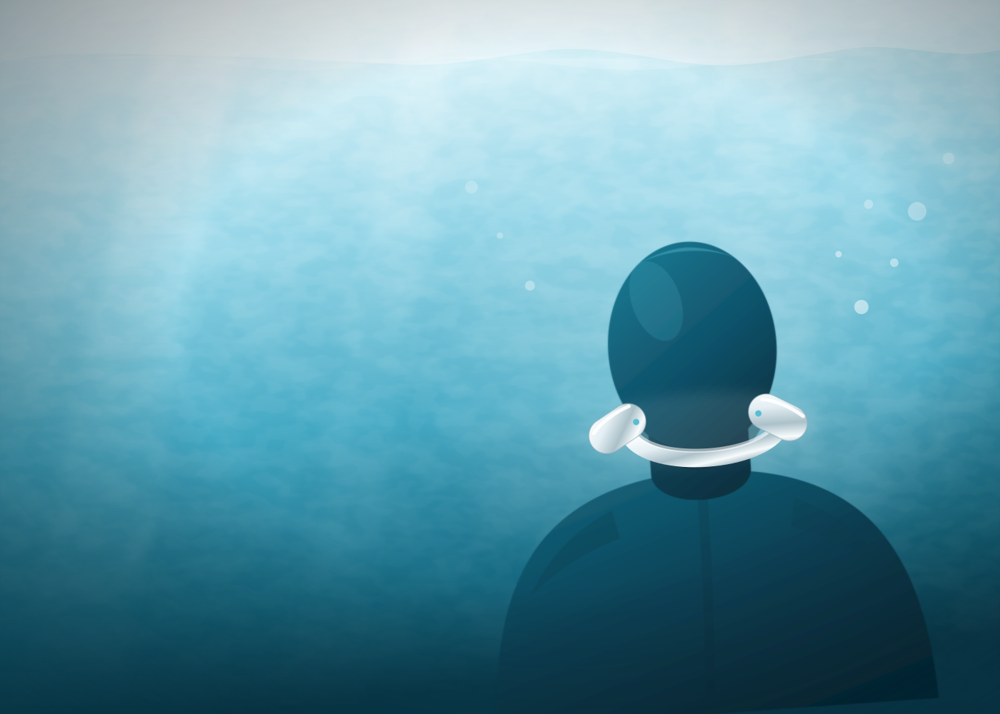
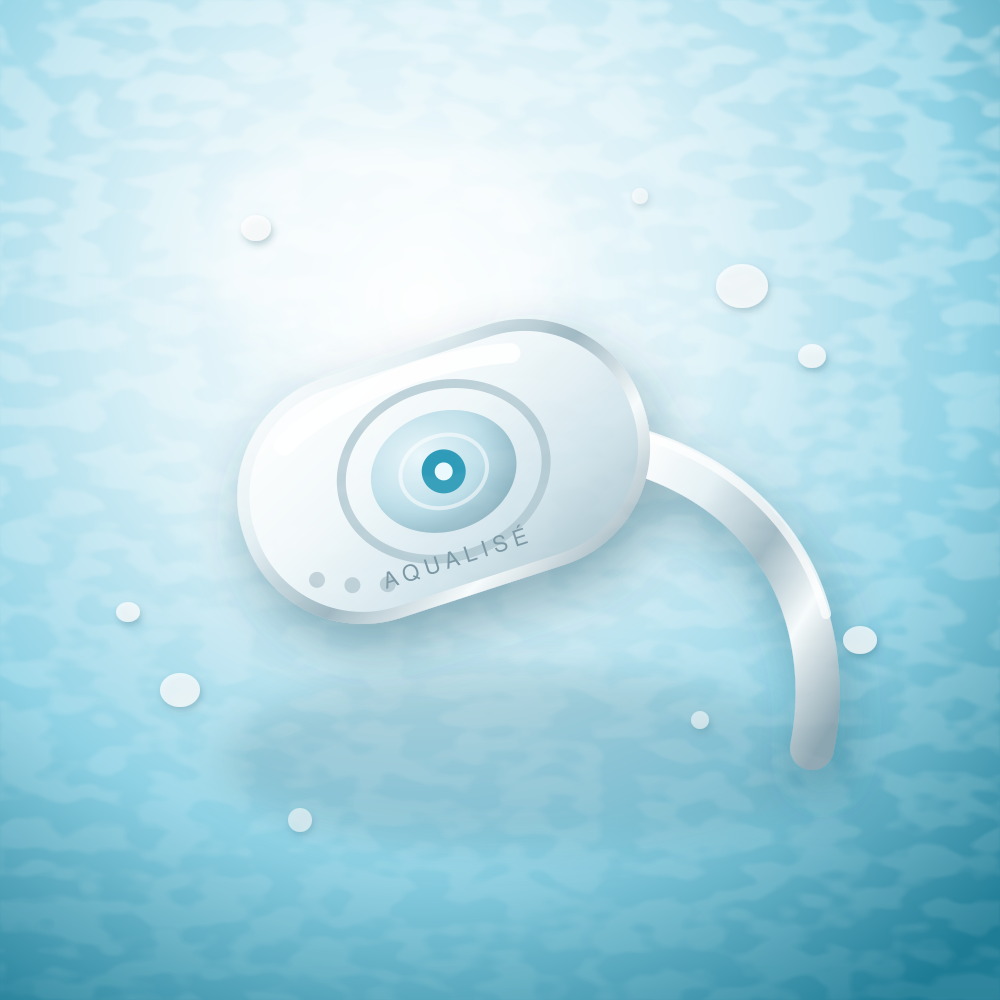
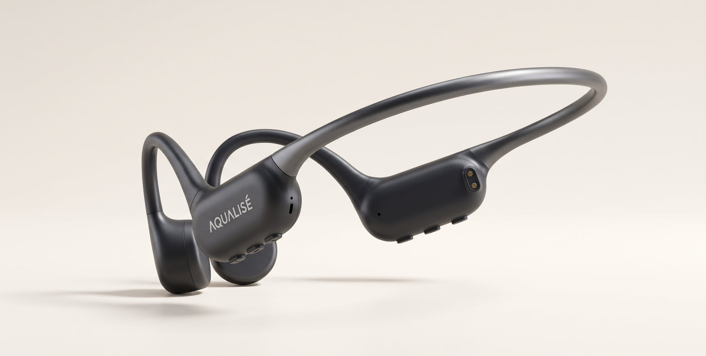
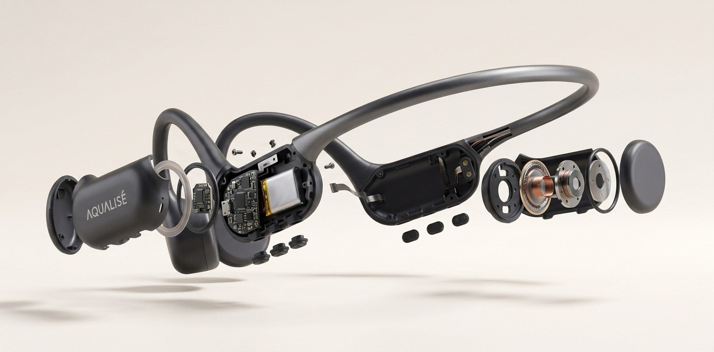
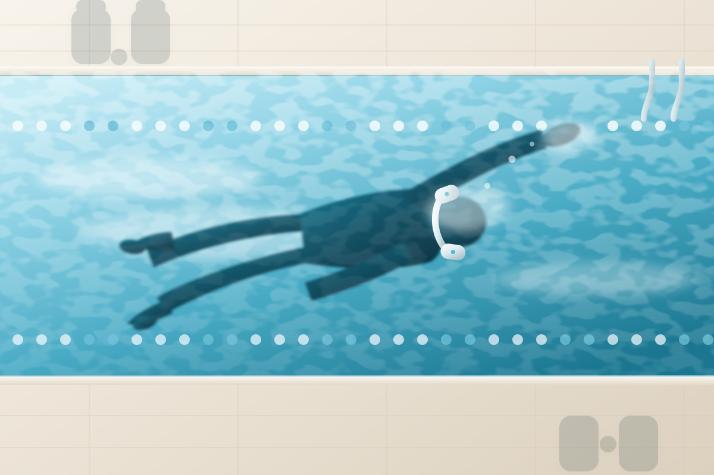
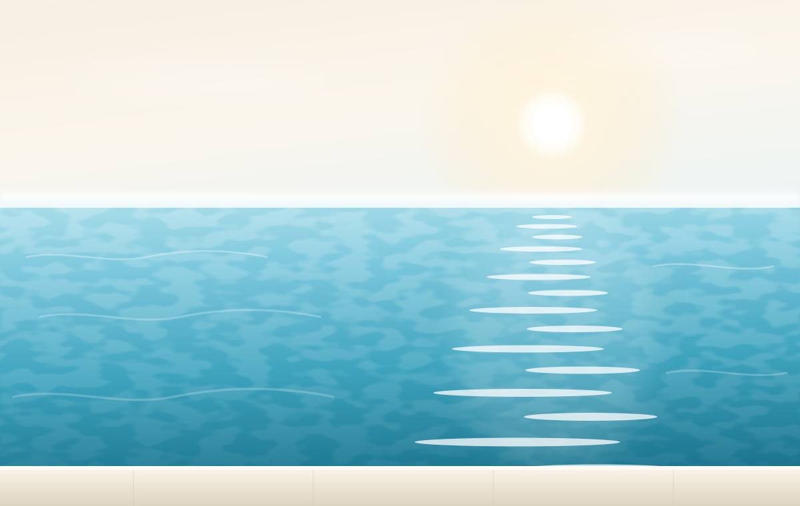
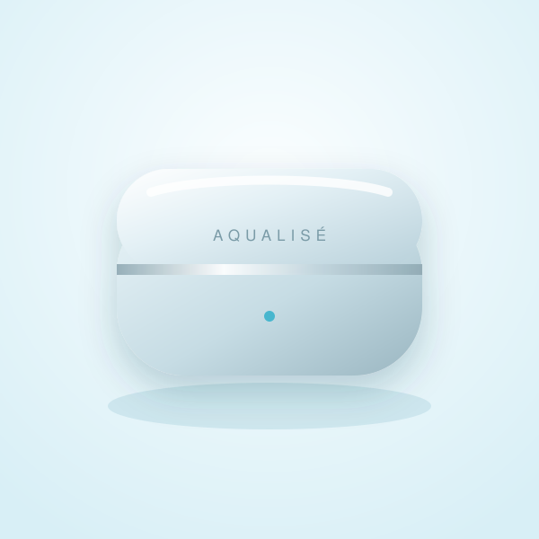
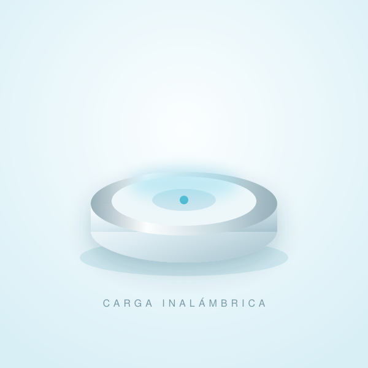
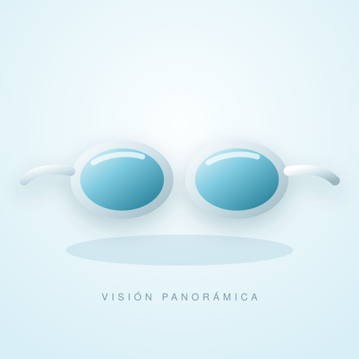

Esencial
AQUALISÉ Onda
La puerta de entrada al silencio azul. Ligereza extrema y un sonido cálido, pensado para nadar largo y despacio.
10 ATM32 g12 hBluetooth 5.4
349 €IVA incluido

Dos unidades minúsculas descansan junto a tus oídos. Una banda flexible de titanio abraza la nuca. No hay cables, no hay tapones, no hay ruido: solo el azul, tu respiración y la música que viaja por el hueso.
Bajo el agua el mundo se apaga. Desaparecen las pantallas, las voces, las prisas. Queda un cuerpo que avanza y una cadencia que se repite. AQUALISÉ nació para habitar ese espacio: no para llenarlo de ruido, sino para darle una banda sonora.
Nuestros ingenieros pasaron cuatro años perfeccionando un transductor capaz de transmitir música a través del pómulo con una fidelidad que nadie creía posible en inmersión. El resultado no se lleva en los oídos. Se siente.
Diseñado y ensamblado a mano
en San Sebastián, España

«El primer largo con AQUALISÉ no se olvida.»
Revista Áurea · Objeto del año

La misma pieza que se apoya en tu pómulo, abierta de par en par. Baja y se separa sola.
Sigue bajandoMontado son una banda y dos cápsulas. Abierto aparece la placa, la batería, el transductor y las juntas que cierran cada cápsula contra el agua.
La banda que abraza la nuca, la placa y la batería alojadas en el brazo, el transductor con su bobina de cobre y la tapa que sella la cápsula.
Un mismo corazón acústico, tres temperamentos. Todos sellados a 10 ATM, todos con la banda flexible de titanio que se olvida en cuanto empiezas a nadar.
La puerta de entrada al silencio azul. Ligereza extrema y un sonido cálido, pensado para nadar largo y despacio.
Para quien cuenta cada largo. Memoria interna de 8 GB, sensor de viraje y graves reforzados que sostienen el ritmo de la serie.
Trescientas piezas numeradas. Titanio grado 5 pulido a espejo, estuche forrado en nácar y grabado a mano de tus iniciales.
Cada carcasa se pule durante once horas y se sella con una capa cerámica que resiste el cloro, la sal y la crema solar sin perder el brillo.
El blanco cálido de la porcelana marina. Desaparece bajo la luz de la piscina y no muestra una sola huella.
Seis decisiones de ingeniería que explican por qué nuestros clientes no vuelven a nadar sin ellos.
Dos transductores apoyados en el pómulo transmiten la música directamente al oído interno. El agua deja de ser un obstáculo y se convierte en el mejor conductor posible.
Cuerpo monocasco sin juntas visibles, certificado hasta cien metros. Piscina, mar abierto, agua salada o cloro: nada entra.
Treinta y dos gramos repartidos en una banda de titanio con memoria de forma. Cabe bajo el gorro, no se mueve en el viraje y no deja marca.
Ocho gigas de memoria interna para dos mil canciones. Deja el móvil en la taquilla: el agua no interrumpe lo que ya llevas dentro.
La base magnética devuelve tres horas de música en el tiempo que tardas en cambiarte. Autonomía total de catorce horas.
Nada obstruye el canal auditivo. Oyes al entrenador, la señal de salida y tu respiración mientras la música sigue sonando por dentro.
Cuatro años de laboratorio en el Cantábrico para resolver un problema antiguo: el agua ahoga los auriculares convencionales. Nosotros dejamos de intentar atravesarla.
Dos motores de conducción ósea de 14 mm calibrados uno a uno. Trabajan entre 20 Hz y 20 kHz con una distorsión inferior al 0,4 % incluso sumergidos.
Un sensor de presión detecta el momento exacto de la inmersión y reequilibra graves y medios en veinte milisegundos. La música no cambia de volumen al entrar en el agua.
Un arco de 1,1 mm con memoria de forma que ejerce la presión justa: suficiente para no moverse en el viraje, imperceptible tras cuarenta minutos.
Carcasa mecanizada en una sola pieza, sin juntas ni tapas. Carga magnética por contacto, porque un puerto abierto siempre acaba siendo una grieta.

Hay quien entra en el agua para competir y quien entra para desaparecer. AQUALISÉ funciona igual de bien en ambos casos: sostiene la cadencia de una serie de mil metros y acompaña el vacío luminoso de un baño al amanecer.
Descubre tu ritmo bajo el agua
Nado aguas abiertas desde hace quince años y siempre acepté que el mar sonaba a nada. El primer amanecer en Tarifa con los Marea Pro me tuve que parar a mitad de travesía. No me lo esperaba.
Hago 4.000 metros cuatro días por semana. Los uso bajo el gorro de competición y ni los noto en los virajes. La memoria interna me ha quitado el móvil de la taquilla y, con él, media ansiedad.
Los compré por el diseño, lo reconozco. El Éclat en champán es una pieza preciosa. Me quedé por la hora de silencio que me regalan cada mañana antes de abrir el estudio.
Piezas diseñadas en la misma mesa que los auriculares, con los mismos materiales y el mismo cuidado.

Aluminio mecanizado y forro de microfibra. Tres cargas completas y un cierre magnético que suena a relojería.

Carga magnética por contacto sobre un disco de cristal templado. Doce minutos para tres horas de música.

Lentes de visión panorámica con tratamiento antivaho permanente, perfiladas para encajar con la banda sin presionar.
Una comunidad reducida de nadadores que entienden el agua como un lugar y no como un ejercicio. Acceso a piscinas privadas, sesiones al amanecer y una relación directa con quienes fabrican tus auriculares.
La membresía anual que convierte una compra en una relación.
Piscinas que merecen un viaje, listas de reproducción compuestas para nadar y acceso anticipado a las series limitadas. Nada más.
Al suscribirte aceptas la política de privacidad. Puedes darte de baja en un clic, aunque nos gustará que te quedes.
Bienvenida a bordo. Revisa tu correo.